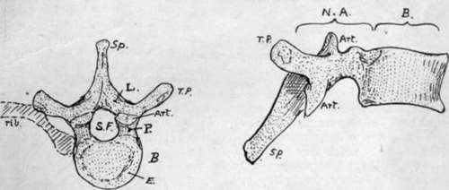
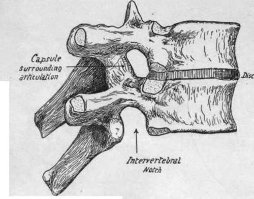
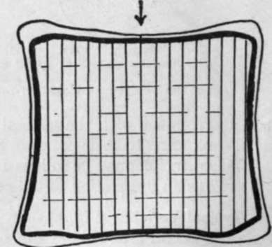

Typical Vertebra
Description
This section is from the book "The Anatomy Of The Human Skeleton", by J. Ernest Frazer. Also available from Amazon: The anatomy of the human skeleton.
Typical Vertebra
In front a strong body carries and transmits weight, while the neural arch behind this covers in the spinal cord : in conformity with this we find the strong pads of the intervertebral discs placed between the bodies of contiguous vertebrae, whereas the arches are connected by ligaments and tend to overlap one another.
In the articulated column the successive arches and ligaments, with the backs of the bodies, enclose a neural or spinal canal for the cord and membranes, and the portion of the canal that is enclosed in the neural arch of each separate bone constitutes the spinal foramen of that vertebra.
The neural arch has spinous and transverse processes projecting from its back and sides respectively, for the attachment of muscles and ligaments : the transverse processes also help to support ribs in their attachment to the column. Each half of the neural arch is divided by the position of the transverse process into a posterior part between this process and the spine, termed the lamina, and a portion in front between the process and the body, which constitutes the ■pedicle. These two parts are under somewhat different conditions : the pedicles are thick and somewhat rounded bony bars transmitting to the body the weight of the body-wall carried by the rib to the transverse process, whereas the laminae are not concerned in this, but are flattened and sloped to cover in the spinal canal. It can be seen, however, that thickened portions extend in the laminae between the spines and the pedicles, better marked as we proceed down the column ; these bear the strain of muscles acting on the spines. The arch articulates by means of articular processes with the arches above and below it, so that it carries two pairs of such processes, superior and inferior. They are placed in a general way above and below the base of the transverse processes-that is, the upper ones are always at the junction of the processes and pedicles, but the lower are usually further back and even on the lower borders of the laminae.
Fig. 5.-A "typical" vertebra (mid-dorsal). From above and from the side. li. body; N.A. neural arch; S.F. spinal foramen; Sp. spinous process; T.P, transverse process; L. lamina ; P. pedicle ; Art. articular process. A rib is also indicated in position on one side. E. is the " epiphysial plate " or ring on the body.
Turning now to the pedicles, we observe that in vertical depth they are not equal to the bodies to which they are attached. In this way " notches " lie above and below the pedicles, and, because the pedicle is attached nearer the top than the bottom of the body, the inferior intervertebral notch is much the deeper of the two. The notches are bounded behind by the articular processes, and when the vertebrae are in apposition it is seen (Fig. 6) that the upper and lower notches of contiguous vertebrae are combined to form an intervertebral foramen, which is bounded above and below by pedicles, behind by the joined articular processes, and in front by the intervertebral disc and the lower part of the body above it. The spinal nerves escape through the intervertebral foramina, and small branches of the segmental arteries enter the canal through them.
The body, being the weight-carrying part of the vertebra, is built accordingly. A certain amount of elasticity in the column is obtained by the formation of the body almost entirely from cancellous tissue, and the strongest lamellae of this run in the direction of pressure from above downwards, being held together by weaker horizontal lamellae (Fig. 7).
The intervertebral discs add greatly to the elasticity of the column, at the same time connecting the bodies strongly together, so that very little movement is possible between adjacent bones, although considerable power of motion of the column as a whole results from the presence of a number of segments. Each disc consists of a peripheral annulus fibrosus of fibrous tissue more or less concentrically arranged, surrounding a softer and more elastic nucleus pulposus. The disc is fastened to layers of hyaline cartilage which cover the upper and lower surfaces of the vertebral bodies : the hyaline cartilage ossifies in part as an epiphysis to the body, so that these surfaces of the body present an epiphysial plate in the shape of an incomplete ring (Fig. 5).
Fig. 6.-Two dorsal vertebra articulated to show the disc in position and the formation of the intervertebral foramen.
Fig. 7.-A scheme to show the direction of the lamella of cancellous bone in the body of a vertebra; the main direction is vertical, in the line of pressure as indicated by the arrow, but weaker lamella: bind these together transversely.
In the foregoing general account of a vertebra the terms " arch " and " body " have been used in their ordinary descriptive sense. It is necessary, however, to say that the term " centrum " is frequently used in the same sense as " body," but that it does not mean quite the same, being really a more strictly accurate term for nearly the whole of the " body." To understand the difference it is necessary to go a little way into the development of a vertebra. The bone is laid down in cartilage which afterwards ossifies, and looking at it in its early stages it can be appreciated at once that there are two main parts in it-the " centrum " and the " neural arch " (in two pieces). But when the fusion occurs the distinction is not so evident, yet it can be understood if it is remembered that the rib is only carried by the neural arch and does not articulate with the centrum. This being so, the junction of the two parts-the ncuro-central suture, as it is termed-must lie in front of the articulation with the head of the rib, and yet the part that carries this head belongs in a varying degree to the descriptive " body," as will be seen when dealing with the several vertebrae.
The difference between the values of the terms is not great from the point of view of description, but in the interests of accuracy it should be borne in mind, and the word " centrum " ought only to be used when the morphological entity which lies between the neuro-central sutures is definitely meant ; on the other hand, the word " body " is conveniently applied to the whole mass that lies in front of the free pedicles.
Continue to: